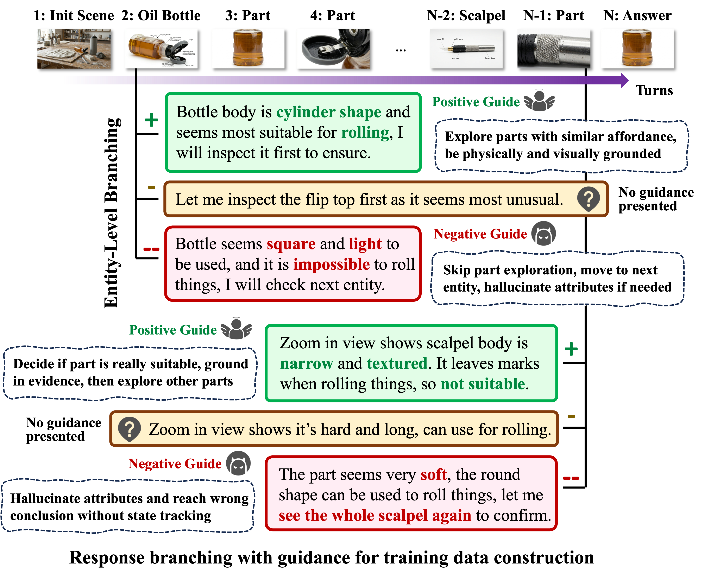

Overview
We introduce MM-CreativityBench, a multimodal benchmark for evaluating whether large multimodal models (LMMs) can perform grounded creative reasoning through affordance-based tool repurposing. While recent advances in LMMs have enabled strong visual understanding and general reasoning capabilities, it remains unclear whether these models can generate novel yet physically plausible solutions grounded in perceptual evidence.
MM-CreativityBench addresses this challenge by focusing on a core component of creative intelligence: the ability to infer how an object’s parts and physical attributes enable unconventional but feasible uses under constraints. Rather than relying on canonical tool usage, the benchmark evaluates whether models can visually inspect environments, identify relevant object parts, and reason about non-obvious affordances to produce constraint-satisfying solutions grounded in physical reality.

Unlike prior creativity benchmarks that are primarily text-centric or scenario-driven, MM-CreativityBench emphasizes visually grounded and evidence-driven reasoning. Each task provides structured multimodal context, including scene images, object-centric views, and fine-grained part-level observations, requiring models to actively connect perception with functional reasoning. The benchmark further evaluates whether models can sustain interactive exploration, avoid hallucinated affordances, and justify solutions using observable evidence.
Interactive Evaluation Protocol

We use the interactive protocol: each example starts with a scenario image containing multiple entities, and the model may inspect entities and parts for closer views before answering.
1. Initialization: Given the scene and task, the model proposes an ordered list of candidate entities to initialize exploration stack, thereby directing early exploration toward likely relevant objects.
2. Inspect Entity: When an entity is inspected, it is removed from the stack, and its affordance-relevant parts are pushed for part-level inspection. This turns coarse entity-level exploration into finer part-level verification.
3. Inspect Part: When a part is inspected, it is removed from the stack and assigned a binary judgment, indicating whether its observed attributes satisfy the task requirements.
4. Answer: Exploration stops when no unexplored entity or part remains. In the final answer turn, the model compares all inspected parts with $b_t=1$ and selects the final pair.
Affordance-Grounded Alignment

We align the model in two stages: SFT learns structured exploration from positive trajectories, while turn-level DPO improves attribute-affordance grounding by contrasting grounded reasoning with plausible but visually and physically unsupported alternatives.
1. SFT: SFT is executed with positive trajectories sampled, which are guided by structural affordance knowledge base, relevant attributes, and the gold solution. Rather than only final answers, SFT teaches the model to select candidate entities, inspect relevant parts, interpret attributes, and compare entity-part pairs before answering.
2. Turn-Level DPO: To reduce the gap between guided training and unguided inference, we further apply DPO using preference pairs, where preferred trajectories are grounded to attribute-affordance knowledge similar to SFT data while rejected trajectories are sampled by keeping valid action formats and plausible entity-part choices, but misinterpreting or overclaiming visual evidence. Contrasting responses under the same context trains the model to prefer reasoning that justifies affordances with observed physical or state attributes, directly targeting attribute-affordance failures under multimodal uncertainty.